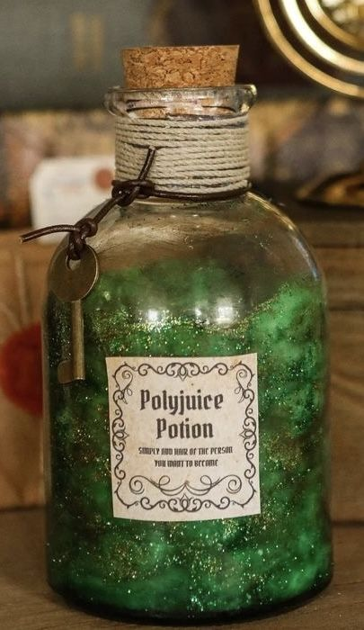

Polyjuice Potion – Mastery of Transformation
"To don another’s visage is a spell of great consequence—heed every detail or risk dire outcomes."

Description
A potion of immense complexity, Polyjuice allows the drinker to assume the physical form of another witch or wizard. Its use is strictly regulated by the Ministry of Magic, and the process of brewing is lengthy and exacting. One wrong step and the transformation could prove both embarrassing and irreversible.
Ingredients
- 3 bundles knotgrass, harvested at dawn
- 1 handful fluxweed, picked under a full moon
- 4 soaked lacewing flies, matured 21 days
- 2 leeches, alive
- 2 pinches boomslang skin powder
- 1 pinch bicorn horn powder
- A single hair of the target (crucial)
Steps
- Combine knotgrass and fluxweed; stir four times clockwise, then let brew for 60–80 minutes.
- Add lacewing flies; crush gently with wand and stir in low heat for 30seconds.
- Introduce leeches; stir once anticlockwise and rest for 10 minutes.
- Fold in boomslang skin and bicorn horn powders; wave wand in a figure-of-eight.
- After 20 seconds of high heat, stir three times anticlockwise.
- Finally, slip in the target’s hair—stir slowly until potion turns pale green.
- Decant quickly; note: effects last 10–12 hours only.
Home